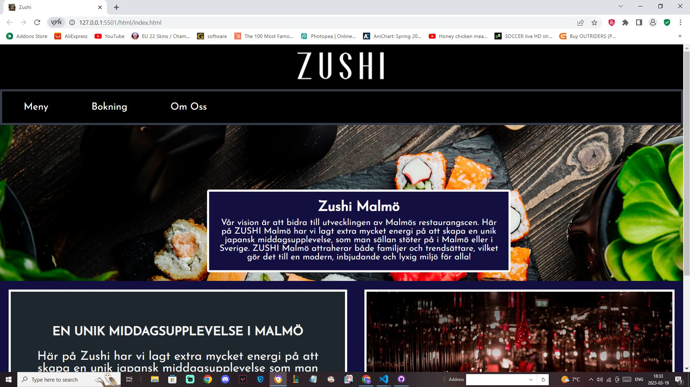

Miniprojektet 2 - Lokala restaurang
sdffsffdsdfsffdsf
sdffsffdsdfsffdsf
sdffsffdsdfsffdsf
Miniprojektet 2 uppgiften handlar om att hitta en lokala restaurang och göra en liknande fast att förändra vissa detaljer. Den består av en startsida där man kan hitta restaurangens vision och allmän information till vad de erbjuder. I Combo Menu sidan så kan man hitta en sushi meny där man kan välja lite vad som och beställa. I bokning sidan hittar man en formulär där man kan boka en tid för att äta. Sist har vi Om Oss sidan där mer information av restaurangen finns tillgänglig.